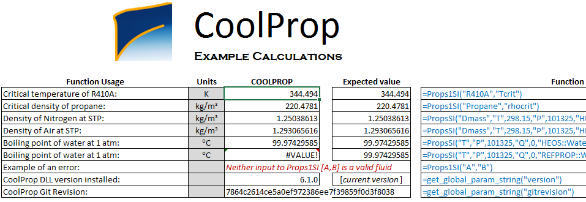
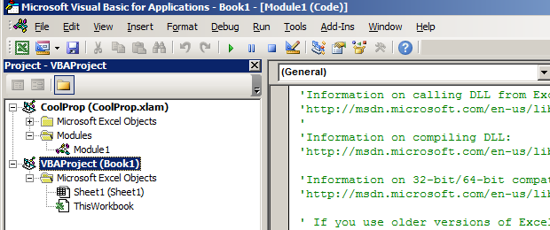

Working with CoolProp in Excel (and vba)
CoolProp is a very useful package for the calculation of the physical (transport and thermodynamic) properties of pure fluids and mixtures. Usually, I call it from Julia or Python, but when it comes to communication with colleagues, they often prefer an excel file. I must confess, excel is not my cup of tea and I constantly make mistakes. Even when everything works fine, I suddenly run into a problem that can be solved way easier using a Python/Julia script. I'm not saying excel is a weak or bad tool; I'm just saying other tools are better!
Few months ago, I calculated the pressure drop of a CO2 transport pipeline and the amount of compression work that is required for the gas transport. For the pressure drop, I used the Weymouth correlation. I first calculated the isentropic work of a compressor and then divided it by the mechanical efficiency of a centrifugal compressor to estimate the real power requirement. I assumed a multi-stage compressor with inter-stage cooling and a maximum compression ratio of three to three and a half. This is something that can be probably done in an excel sheet, but can be done much easier with a few lines of code. The same hold for the calculation pf pressure drop. Gas is compressible, and as the pressure drops in the pipeline, gas expands and it linear velocity increases. Therefore, the pressure drop needs to be calculated in short segments of the pipe, where we can assume the physical properties of the gas phase are constant. This segment based calculations although fits into an excel sheet, is not something that we need to see in detail. We are only interested in the pressure drop in the whole pipeline, not in every little segment.
This encouraged me to overcome my excel-phobia and dive into it by writing two macros for the calculation of pressure drop in a gas pipeline and the power requirement in a compressor. I did not document the procedure, but I try my best to repeat it here with all the details. Here's the (main part of) formulation:
$$W_{comp} = H(T(S_{out}, p_{out}), p_{out}) - H(T_{in}, p_{in})$$
The above equation means that the compression process is reversible, so we can calculate the temperature of the compressed gas, assuming that its entropy is equal to the entropy of the input gas stream.
Requirements
A windows machine (or a windows virtual machine like mine) with Microsoft Excel installed.
Step 1: install CoolProp for Windows
Go to this web page and download the CoolProp installer (a file called CoolProp_v6.1.0.0.exe). I worked with version 6.1.0. You can alternatively download the latest version from here. I installed it with all the default settings. You may want to do the same.
Step 2: test your installation
CoolProp installer copies a test excel file called TestExcel.xlsx on your desktop. Open it and make sure that it works fine. By fine, I mean this screen-shot:

If it doesn't work and you cannot see the numbers, go to the Installation sheet in the same excel file and follow the instructions.
Step 3: start writing a VBA function
Create a new excel workbook. Then press Alt + F11 to open the Microsoft Visual Basic for Applications. You will see something like this:

Right click on VBAProject (Book1) and choose Insert -> Module:
 Before writing your new function in the module, you need to tell excel that you are going to call CoolProp functions. To do that, go to
Before writing your new function in the module, you need to tell excel that you are going to call CoolProp functions. To do that, go to Tools -> References... and check the box next to CoolProp like the following and then press OK.

Step 4: Write your function
This is the function I have written for the calculation of the compression work. The inputs are number of compression stages (n_stage), the temperature in Kelvin after the inter-cooling stage (T_comp), input and output pressure for each compressor in Pascal (p_in and p_out), and gas_type which is the name of the fluid, e.g., "CO2". Copy and paste the function into your new module.
Function comp_work(n_stage, T_comp, p_in, p_out, gas_type)
w_min_transport = 0#
comp_ratio = Exp(Log(p_out / p_in) / n_stage)
p_comp = p_in
p_comp_next = comp_ratio * p_comp
For i = 1 To n_stage
S_in = CoolProp.PropsSI("SMOLAR", "T", T_comp, "P", p_comp, gas_type) ' molar entropy J/(mol.K)
H_in = CoolProp.PropsSI("HMOLAR", "T", T_comp, "P", p_comp, gas_type) ' molar enthalpy J/mol
' find the output T for isentropic compressor
' S_in-CoolProp.PropsSI("SMOLAR", "T", T_comp, "P", p_out, gas_type)
T_out = CoolProp.PropsSI("T", "SMOLAR", S_in, "P", p_comp_next, gas_type)
H_out = CoolProp.PropsSI("HMOLAR", "T", T_out, "P", p_comp_next, gas_type) ' molar enthalpy J/mol
w_min_transport = w_min_transport + H_out - H_in ' J/mol
p_comp = p_comp_next
p_comp_next = p_comp * comp_ratio
Next i
comp_work = w_min_transport
End Function
Step 5: test your new function
The (macro-enabled) excel file contains the vba code and a simple test, can be downloaded here; the final results should look like this:

Comments
Comments powered by Disqus